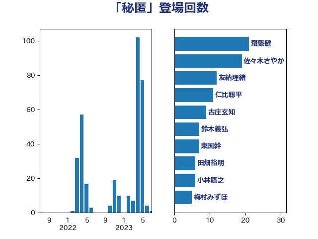

単語「秘匿」

| 齋藤健 | 自由民主党 | 21 回 |
| 佐々木さやか | 公明党 | 19 回 |
| 友納理緒 | 自由民主党 | 12 回 |
| 仁比聡平 | 日本共産党 | 11 回 |
| 古庄玄知 | 自由民主党 | 9 回 |
| 鈴木義弘 | 国民民主党 | 7 回 |
| 東国幹 | 自由民主党 | 7 回 |
| 田畑裕明 | 自由民主党 | 6 回 |
| 小林鷹之 | 自由民主党 | 6 回 |
| 梅村みずほ | 日本維新の会 | 5 回 |
| 本村伸子 | 日本共産党 | 5 回 |
| 守島正 | 日本維新の会 | 5 回 |
| 田村智子 | 日本共産党 | 4 回 |
| 清水真人 | 自由民主党 | 4 回 |
| 大口善徳 | 公明党 | 4 回 |
| 葉梨康弘 | 自由民主党 | 3 回 |
| 芳賀道也 | 国民民主党 | 3 回 |
| 米山隆一 | 立憲民主党 | 3 回 |
| 安江伸夫 | 公明党 | 3 回 |
| 長島昭久 | 自由民主党 | 2 回 |
| 鎌田さゆり | 立憲民主党 | 2 回 |
| 鈴木宗男 | 日本維新の会 | 2 回 |
| 足立康史 | 日本維新の会 | 2 回 |
| 藤巻健太 | 日本維新の会 | 2 回 |
| 福重隆浩 | 公明党 | 2 回 |
| 福島みずほ | 社会民主党 | 2 回 |
| 牧山ひろえ | 立憲民主党 | 2 回 |
| 渡辺周 | 立憲民主党 | 2 回 |
| 浜田靖一 | 自由民主党 | 2 回 |
| 浅野哲 | 国民民主党 | 2 回 |
| 日下正喜 | 公明党 | 2 回 |
| 徳永久志 | 無所属 | 2 回 |
| 後藤茂之 | 自由民主党 | 2 回 |
| 古川禎久 | 自由民主党 | 2 回 |
| 伊藤俊輔 | 立憲民主党 | 2 回 |
| 鬼木誠 | 立憲民主党 | 1 回 |
| 高橋千鶴子 | 日本共産党 | 1 回 |
| 高木かおり | 日本維新の会 | 1 回 |
| 音喜多駿 | 日本維新の会 | 1 回 |
| 青柳仁士 | 日本維新の会 | 1 回 |
| 青山大人 | 立憲民主党 | 1 回 |
| 門山宏哲 | 自由民主党 | 1 回 |
| 鈴木馨祐 | 自由民主党 | 1 回 |
| 金子道仁 | 日本維新の会 | 1 回 |
| 赤嶺政賢 | 日本共産党 | 1 回 |
| 西村康稔 | 自由民主党 | 1 回 |
| 穀田恵二 | 日本共産党 | 1 回 |
| 神津たけし | 立憲民主党 | 1 回 |
| 礒崎哲史 | 国民民主党 | 1 回 |
| 石橋通宏 | 立憲民主党 | 1 回 |
| 石川博崇 | 公明党 | 1 回 |
| 田所嘉徳 | 自由民主党 | 1 回 |
| 猪瀬直樹 | 日本維新の会 | 1 回 |
| 牧島かれん | 自由民主党 | 1 回 |
| 河西宏一 | 公明党 | 1 回 |
| 沢田良 | 日本維新の会 | 1 回 |
| 林芳正 | 自由民主党 | 1 回 |
| 松本剛明 | 自由民主党 | 1 回 |
| 杉尾秀哉 | 立憲民主党 | 1 回 |
| 杉久武 | 公明党 | 1 回 |
| 斎藤アレックス | 国民民主党 | 1 回 |
| 広瀬めぐみ | 自由民主党 | 1 回 |
| 平木大作 | 公明党 | 1 回 |
| 川田龍平 | 立憲民主党 | 1 回 |
| 岸田文雄 | 自由民主党 | 1 回 |
| 山下貴司 | 自由民主党 | 1 回 |
| 宮本徹 | 日本共産党 | 1 回 |
| 宮本岳志 | 日本共産党 | 1 回 |
| 大島敦 | 立憲民主党 | 1 回 |
| 大塚耕平 | 国民民主党 | 1 回 |
| 古賀之士 | 立憲民主党 | 1 回 |
| 井野俊郎 | 自由民主党 | 1 回 |
| 三浦信祐 | 公明党 | 1 回 |